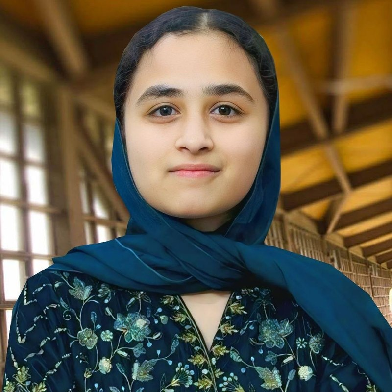

Girls' Education
Helping girls reach learning and the opportunities that come with it.
Youth Leader | Climate Advocate | Human Rights Activist | Social Entrepreneur | International Youth Representative
I lead youth-driven initiatives in girls' education, women's empowerment, legal identity, water access and climate action, and I represent Pakistani youth on international platforms. I am an O-Level student studying Pre-Medical & Sociology, and I am learning full-stack development and AI development.

I am a Pakistani youth leader, climate advocate, human rights activist, social entrepreneur and international youth representative. My work combines humanitarian service, environmental sustainability, diplomacy, public speaking, research and social entrepreneurship.
I am an O-Level student studying Pre-Medical & Sociology. Alongside my social-impact work, I am learning full-stack development and AI development, because I want technology to be part of how I serve communities.
I am currently learning full-stack development and AI development. This is my learning path so far.
Helping girls reach learning and the opportunities that come with it.
Supporting women through skills, education and practical opportunities.
Taking action for the planet as a climate advocate.
Environmental sustainability through youth-led initiatives.
Standing up for the rights and dignity of every person.
Helping children obtain documents such as birth certificates.
Work that supports people with hearing and physical disabilities.
Access to clean water for schools and underserved communities.
Recycling and awareness work against plastic waste.
Leading and representing young people at home and abroad.
Working with communities to open access to essential services.
Building initiatives that solve community problems.
I founded the Pehchaan Project to help vulnerable children, especially girls, obtain legal identity documents such as birth certificates so they can access education and essential services.
300+ girls supported through legal identity and education
I work with the GSK Women Empowerment Centre in Faisalabad, which supports underprivileged girls and women through skills training, education, digital learning, stitching, cooking, and other practical opportunities.
600+ girls and young women supported
An initiative I founded in the area of disability inclusion.
1,000+ hearing aids provided across Pakistan
A project I founded to support farmers.
100+ farmers supported
I have worked on providing water pumps and access to clean water in schools, religious places, and underserved communities, promoting the message that water has no religion.
100+ water pumps installed in schools, mosques, churches and graveyards
Plastic recycling, climate awareness and tree plantation.
International Global 100 Women Leaders
Scholarship Awardee
Baku